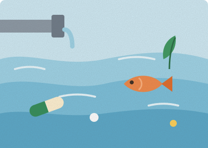
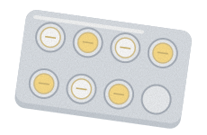
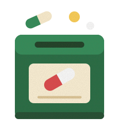

한강 물에서 나온
약 성분 13가지
13/ 55개 항목
한강 취수원수를 5년간 조사해 검출된 잔류의약물질 수
하수처리 공정을 거쳐도 완전히 제거되지 않은 일부 잔류의약물질이 하천·호소 등 상수원으로 유입
정수처리 후에는 3개 항목만 검출됐고, 수돗물의 인체 위해 가능성은 매우 낮다고 평가됐어요. 수돗물은 관리되고 있지만, 약 성분이 강까지 들어온다는 뜻이에요.
SUWON · WASTE MEDICINE GUIDE
변기나 싱크대로 버린 약은 하천과 흙으로 흘러갈 수 있어요.
수원시 수거함·보건소·약국 곳 중 가까운 곳을 찾아보세요.
가까운 수거함에 넣기만 해도 약 성분이 하천으로 흘러가는 걸 막을 수 있어요.

01
몸속에서 작용하도록 만든 화학물질이기 때문이에요
변기나 싱크대로 버린 약은 그 성분이 물과 흙으로 흘러갈 수 있어요. 아주 적은 양이라도 물속 생물이 계속 노출되면 생태계에 영향을 줄 수 있어요.
물에 흘려보낸 약은 다시 모을 수 없어요. 수원시는 소각용 종량제 봉투 배출도 안내하지만, 변기나 싱크대에 버리는 건 어느 지역에서도 안 돼요.
“수원시는 현재 폐의약품을 모두 소각하여 처리하고 있습니다.” 수원시보건소, 2024.06
13/ 55개 항목
한강 취수원수를 5년간 조사해 검출된 잔류의약물질 수
하수처리 공정을 거쳐도 완전히 제거되지 않은 일부 잔류의약물질이 하천·호소 등 상수원으로 유입
정수처리 후에는 3개 항목만 검출됐고, 수돗물의 인체 위해 가능성은 매우 낮다고 평가됐어요. 수돗물은 관리되고 있지만, 약 성분이 강까지 들어온다는 뜻이에요.
국립환경과학원은 의약품 같은 미량오염물질을 이렇게 설명해요.
수중에 극미량으로 존재하지만 생태계와 인체 건강에 잠재적인 영향을 줄 수 있는 물질
국립환경과학원은 미호강 유역의 물·퇴적물·부유물질에서 농약류와 의약물질이 어떻게 분포하는지 조사하고 있어요.
48.4%
최근 1년 안에 약을 버린 2,264명 중 수거함이 아닌 곳에 버리거나 보관한 비율
종량제 봉투는 수원시처럼 소각용 봉투 배출을 안내하는 지자체도 있어요. 다른 지역에서는 대부분 맞지 않는 방법이에요.
잘못 버리거나 보관한 1,096명 응답 · 환경재단 2025
수거함 위치를 지도로 볼 수 있다면 이용하겠다는 응답은 88%였어요. 가까운 수거처 찾기
환경부 설명자료(2024.09.24) · 단위 톤
수거 거점을 늘리고 수거 방식을 다양화하면서 수거량이 크게 늘었다고 해요(환경부).
02
수원시보건소와 동 행정복지센터의 공식 안내를 옮겼어요
수원시보건소 「수원시 폐의약품 처리 관련 안내」(2024.06)와 동 행정복지센터 수거함 안내(2024.10~11) 기준이에요. 수거함에 붙은 안내가 다르면 그 안내를 따라 주세요.

약봉지(포장지)와 분리한 뒤 약만 모아요.
약봉지를 뜯지 않고 그대로 모아요.
휴지(티슈) 등에 적셔서 배출해요.
내용물을 따로 짜지 말고 그대로 넣어요.
따로 분리해요플라스틱 약통과 종이 상자는 재활용품으로 분리배출해요. 약봉투에 적힌 이름 같은 개인정보도 확인하세요.
넣으면 안 돼요일반 쓰레기 · 건강보조식품 · 에너지드링크 · 의료기기 등
구 보건소, 동 행정복지센터, 일부 아파트 단지에 있어요. 수원시는 “4개 보건소 및 44개 동 행정복지센터” 수거함을 안내해요.
약국마다 받는 품목이 달라요. 자료상 10곳 중 5곳은 마약류만 받아요. 약국별 품목은 지도에서 확인하세요.
수원시보건소는 위 방법대로 준비해 소각용 종량제 봉투에 배출하는 방법도 안내해요(2024.06 기준). 다른 지역에서는 대부분 안 되는 방법이고, 2024년 안내라 지금도 같은 기준인지는 수원시보건소에 확인하세요.
수원시는 일반 쓰레기 종량제 봉투에 버려도 돼요. 수원시보건소는 알약·가루약·물약·안약·연고를 위처럼 준비해 소각용 종량제 봉투에 버리는 방법도 안내해요. 수원시는 폐의약품을 모두 소각하기 때문이에요(2024.06 기준). 아래 다른 지역은 종량제 봉투가 아니라 수거함에 넣으라고 안내해요.
| 지역 안내 시점 | 종량제 봉투 | 우체통 | 알약 | 가루약 | 물약·시럽 |
|---|---|---|---|---|---|
| 수원시 2024.06 | 가능소각용 봉투에 | 안내 없음수거함 이용 | 알맹이만포장 벗겨서 | 포장째약봉지 뜯지 않고 | 휴지에 적셔서종량제 봉투로 |
| 서울특별시 2025.09 | 안 돼요‘부적절한 배출’로 안내 | 가능알약·가루약만, 물약 불가 | 포장째포장 뜯지 않고 | 포장째약봉지 뜯지 않고 | 용기째마개 닫아서 |
| 인천 검단구 2026.08 | 수거함만종량제 언급 없음 | 안내 없음수거함 이용 | 포장째포장 뜯지 않고 | 포장째약봉지 뜯지 않고 | 용기째마개 닫아서 |
| 부산광역시 2026.05 | 안 돼요홍보물에 쓰레기통 ✕ | 안내 없음수거함 이용 | 알맹이만포장 벗겨서 | 포장째약봉지 뜯지 않고 | 한 통에 모아서새지 않게 밀봉 |
| 경기 광주시 2026.11 | 수거함만종량제 언급 없음 | 안내 없음수거함 이용 | 알맹이만포장 벗겨서 | 포장째약봉지 뜯지 않고 | 한 통에 모아서플라스틱 통으로 |
| 대전 동구 2026.10 | 수거함만영양제만 일반쓰레기 | 안내 없음수거함 이용 | 포장째포장 뜯지 않고 | 포장째약봉지 뜯지 않고 | 용기째마개 닫아서, 유리병 제외 |
우체통은 우체국과 폐의약품 회수 사업을 하는 지역에서만 쓸 수 있어요. 더 정확한 최신 기준은 각 지역의 안내를 확인하세요.
03
구 색깔로 구분했어요. 지도에서 구를 누르면 그 구만 보여요
장소를 누르면 주소, 세부 위치, 수거 품목, 이용 시간, 전화번호와 정보 출처를 볼 수 있어요.
04
이 사이트의 수거처 정보와 안내는 아래 공개 자료를 바탕으로 만들었어요. 운영 여부나 위치가 바뀌었을 수 있으니 방문 전에 전화로 확인하세요.
